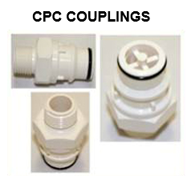
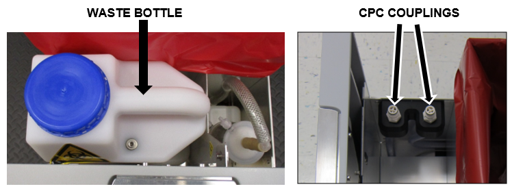
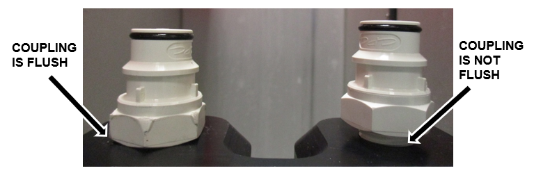
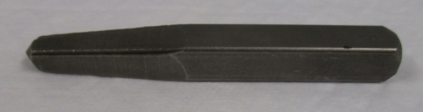

Waste Bottle CPC Coupling Integrity Check
What is Affected
Some white CPC couplings that secure the waste bottle to the waste mounting block have been over- torqued during manufacturing. This has resulted in cracks to the coupling that can cause low vacuum failures.
If the 2 couplings are the old polypropylene type (gray in color), Replace the Two Male Fittings in the Waste Drawer that Connect to the Waste Bottle and Tapping the Waste Bottle Mounting Block to upgrade the fittings to the new type.
Parts and Materials Required
- Panther Tool Kit
- If the CPC Coupling Integrity Check fails:
 2x Waste Bottle CPC Coupling
2x Waste Bottle CPC Coupling

Note—If one coupling is cracked, replace both.
Time Required
- 15 Minutes
Procedure
Part A: Inspect the CPC Coupling
- Put on proper PPE.
- Power down the Panther System.
- Open the Waste Drawer.
- Remove the waste bottle.
- Located the 2 CPC waste bottle couplings.

- If the two couplings are the old polypropylene type (gray in color), STOP and Replace the Two Male Fittings in the Waste Drawer that Connect to the Waste Bottle and Tapping the Waste Bottle Mounting Block. Then verify installation by continuing to the next step.
- Inspect each CPC coupling.
- Check the integrity of the CPC couplings by using a gloved finger to apply a small amount of sideways force to each connector.
Note—If the connector is fractured below the surface it will flex and likely fall apart. - Verify each coupling base is flush to the top of the waste manifold.
Note—If either CPC coupling is damaged or not flush, replace BOTH couplings. 
- Check the integrity of the CPC couplings by using a gloved finger to apply a small amount of sideways force to each connector.
Part B: Replace the CPC Couplings
- Remove the 2 existing CPC couplings.
Note— If either coupling is damaged or broken in the manifold, use a standard tapered extractor set (commercially available) to remove the coupling.

Caution—If the threads on the mounting block are damaged during removal, replace the Waste Bottle Mounting Block [MME-02598] - Install a new set of CPC couplings [MME-02058]
Note—DO NOT over-tighten the new CPC couplings. Over-tightening will create cracks in the new coupling. - Return the waste bottle to the drawer.
- Adjust the mounting block if necessary so the waste bottle is sitting flat in the drawer and the new couplings are fully engaged. Refer Tapping the Waste Bottle Mounting Block.
- Shut the waste drawer.
Verification
- Complete a system prime using the Panther Main software to verify that the vacuum system functions properly.
 button at the top of the page to send feedback, comments, or change requests.
button at the top of the page to send feedback, comments, or change requests.